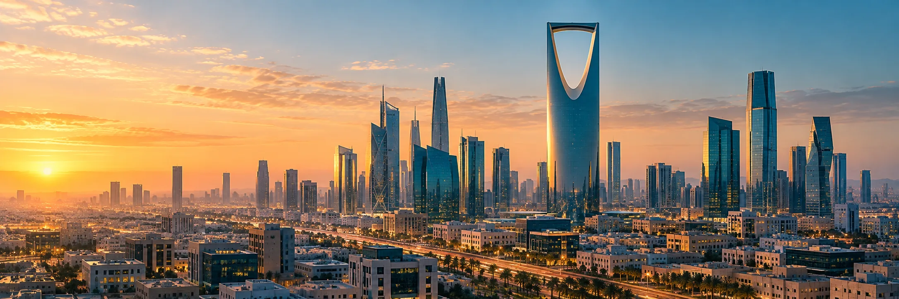
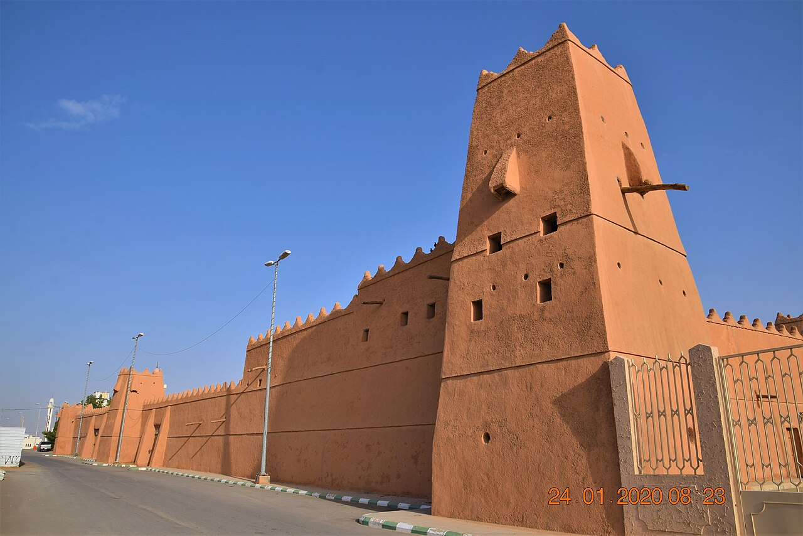
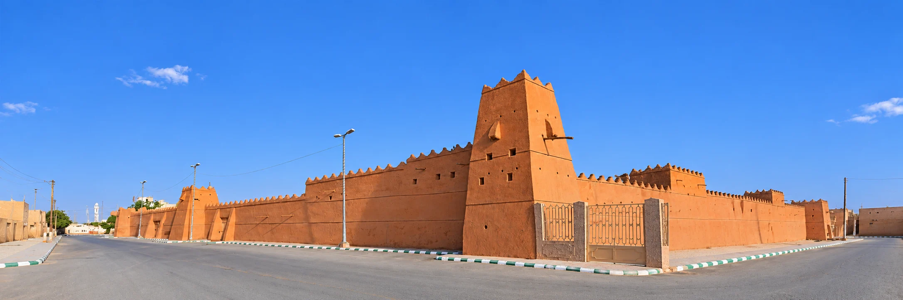

معاينة القص الفعلي — غير منشورة
بريدة وخميس مشيط: تصور بانورامي محسّن بالذكاء الاصطناعي مستند إلى صور موثقة؛ الامتداد البصري تمثيلي. الرياض والباحة: الصور الحالية للمقارنة عند ارتفاع 260 بكسل.
بريدة

مرحبًا بك
فرع بريدة
خميس مشيط

مرحبًا بك
فرع خميس مشيط
الرياض — الصورة الحالية

مرحبًا بك
فرع الرياض
الباحة — الصورة الحالية

مرحبًا بك
فرع الباحة
المصادر والتراخيص والتعديلات — لا تغيّر هذه المعاينة الموقع الحي أو صور المدن المنشورة.
تشخيص الصور الحالية دون أي توليد: قص cover مع تحسين التركيز لثماني صور
وادي الدواسر

وادي الدواسر
البكيرية — امتداد تمثيلي محسّن بالذكاء الاصطناعي
امتداد تمثيلي محسّن بالذكاء الاصطناعي. Saudi Heritage Commission / هيئة التراث الصورة الأصلية CC BY-SA 4.0
المجمعة — امتداد تمثيلي محسّن بالذكاء الاصطناعي
امتداد تمثيلي محسّن بالذكاء الاصطناعي. هيئة التراث السعودية (Heritage Commission) الصورة الأصلية CC BY-SA4.0
المزاحمية — امتداد تمثيلي محسّن بالذكاء الاصطناعي
امتداد تمثيلي محسّن بالذكاء الاصطناعي. Andrew A. Shenouda الصورة الأصلية CC BY2.0
وادي الدواسر — امتداد تمثيلي محسّن بالذكاء الاصطناعي
امتداد تمثيلي محسّن بالذكاء الاصطناعي. هيئة التراث السعودية الصورة الأصلية CC BY-SA4.0

وادي الدواسر
تبوك — امتداد تمثيلي محسّن بالذكاء الاصطناعي
امتداد تمثيلي محسّن بالذكاء الاصطناعي. Saudi Heritage Commission / هيئة التراث الصورة الأصلية CC BY-SA 4.0
حائل — امتداد تمثيلي محسّن بالذكاء الاصطناعي
امتداد تمثيلي محسّن بالذكاء الاصطناعي. معلومات حائل الصورة الأصلية CC BY 3.0
دومة الجندل — امتداد تمثيلي محسّن بالذكاء الاصطناعي
امتداد تمثيلي محسّن بالذكاء الاصطناعي. Richard Mortel الصورة الأصلية CC BY 2.0
الدلم — امتداد تمثيلي محسّن بالذكاء الاصطناعي
امتداد تمثيلي محسّن بالذكاء الاصطناعي. هيئة التراث السعودية الصورة الأصلية CC BY-SA4.0
عرعر — امتداد تمثيلي محسّن بالذكاء الاصطناعي
امتداد تمثيلي محسّن بالذكاء الاصطناعي. Joel Salazar الصورة الأصلية CC BY 2.0
الطائف — امتداد تمثيلي محسّن بالذكاء الاصطناعي
امتداد تمثيلي محسّن بالذكاء الاصطناعي. Saudi Heritage Commission / هيئة التراث الصورة الأصلية CC BY-SA 4.0
نجران — امتداد تمثيلي محسّن بالذكاء الاصطناعي
امتداد تمثيلي محسّن بالذكاء الاصطناعي. Richard Mortel الصورة الأصلية CC BY 2.0
جازان — امتداد تمثيلي محسّن بالذكاء الاصطناعي
امتداد تمثيلي محسّن بالذكاء الاصطناعي. Saudi Heritage Commission / هيئة التراث الصورة الأصلية CC BY-SA 4.0
النماص — امتداد تمثيلي محسّن بالذكاء الاصطناعي
امتداد تمثيلي محسّن بالذكاء الاصطناعي. Richard Mortel الصورة الأصلية CC BY 2.0
بدر — امتداد تمثيلي محسّن بالذكاء الاصطناعي
امتداد تمثيلي محسّن بالذكاء الاصطناعي. Richard Mortel الصورة الأصلية CC BY 2.0
بلجرشي — امتداد تمثيلي محسّن بالذكاء الاصطناعي
امتداد تمثيلي محسّن بالذكاء الاصطناعي. وكالة الأنباء السعودية (واس) الصورة الأصلية CC BY-SA 4.0